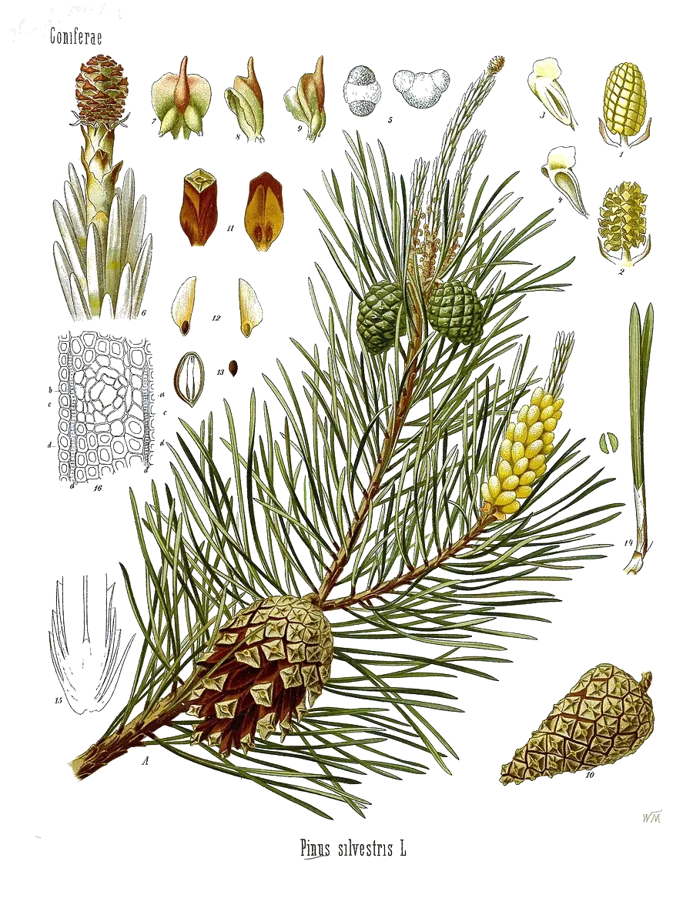

After the pine, Pinus. It is the main component of turpentine. Two fused rings, one of them a strained four-carbon square. The double bond sits inside the ring.
- Scent
- fresh, coniferous, resinous, herbaceous Reference description: “characteristic odor of pine” (HSDB)
- Found in
- pine, spruce and fir, rosemary, juniper, sage, eucalyptus, basil, dill and parsley, frankincense.
- In our honeys
- Sunshine Soothing Berry as a flavouring ingredient; amount not published
- In food
- Evaluated as a flavouring in 2004 by JECFA, the FAO/WHO expert committee on food additives: no safety concern at current levels of intake when used as a flavouring agent. Its entry in the JECFA database
- Molar mass
- 136.23 g/mol
- Boiling point
- 155–156 °C JECFA, HSDB
- CAS number
- 80-56-8
- FEMA number
- 2902
- Record
- PubChem 6654
- Systematic name
- 2,6,6-trimethylbicyclo[3.1.1]hept-2-ene
What has been studied So far: animals
- AnimalsIn a 2017 study, mice given 10 mg per kg did better on learning and memory tests after their memory had been impaired with the drug scopolamine.7
- ReviewA 2019 review summarizes cell and animal work on inflammation, microbes and nerve cells, and notes how few studies there are.6
- Not knownAny effect on memory or attention in people. No human trial of the isolated compound is cited here.